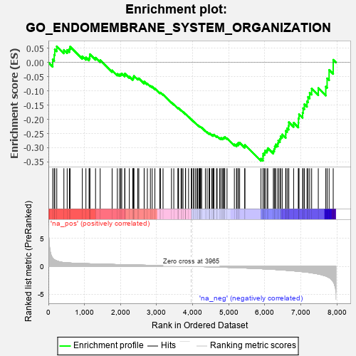
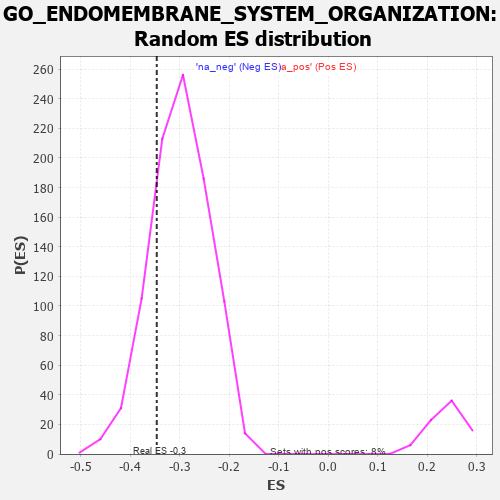

| | | Dataset | 7d |
| Phenotype | NoPhenotypeAvailable |
| Upregulated in class | na_neg |
| GeneSet | GO_ENDOMEMBRANE_SYSTEM_ORGANIZATION |
| Enrichment Score (ES) | -0.34632587 |
| Normalized Enrichment Score (NES) | -1.1571709 |
| Nominal p-value | 0.2023939 |
| FDR q-value | 0.6881621 |
| FWER p-Value | 1.0 |
Table: GSEA Results Summary

Fig 1: Enrichment plot: GO_ENDOMEMBRANE_SYSTEM_ORGANIZATION
Profile of the Running ES Score & Positions of GeneSet Members on the Rank Ordered List
| PROBE | GENE SYMBOL | GENE_TITLE | RANK IN GENE LIST | RANK METRIC SCORE | RUNNING ES | CORE ENRICHMENT | | 1 | SUN3 | | | 119 | 1.426 | 0.0108 | No |
| 2 | CSRP3 | | | 161 | 1.186 | 0.0273 | No |
| 3 | RAB30 | | | 177 | 1.134 | 0.0460 | No |
| 4 | KIFC3 | | | 232 | 0.978 | 0.0570 | No |
| 5 | CCNB2 | | | 429 | 0.672 | 0.0443 | No |
| 6 | GET4 | | | 520 | 0.623 | 0.0441 | No |
| 7 | CCNB1 | | | 581 | 0.601 | 0.0475 | No |
| 8 | FBXW8 | | | 601 | 0.594 | 0.0559 | No |
| 9 | STX17 | | | 940 | 0.497 | 0.0219 | No |
| 10 | AKT1 | | | 1040 | 0.476 | 0.0179 | No |
| 11 | NUP93 | | | 1127 | 0.459 | 0.0153 | No |
| 12 | SNX19 | | | 1146 | 0.454 | 0.0213 | No |
| 13 | MTSS1 | | | 1149 | 0.454 | 0.0293 | No |
| 14 | UBL4A | | | 1307 | 0.427 | 0.0171 | No |
| 15 | CHMP7 | | | 1435 | 0.403 | 0.0082 | No |
| 16 | VRK1 | | | 1766 | 0.343 | -0.0276 | No |
| 17 | COG2 | | | 1911 | 0.319 | -0.0401 | No |
| 18 | ZW10 | | | 1973 | 0.309 | -0.0423 | No |
| 19 | DYM | | | 2006 | 0.304 | -0.0408 | No |
| 20 | VPS25 | | | 2033 | 0.300 | -0.0386 | No |
| 21 | STX16 | | | 2116 | 0.289 | -0.0438 | No |
| 22 | SNF8 | | | 2119 | 0.288 | -0.0388 | No |
| 23 | CREB1 | | | 2243 | 0.269 | -0.0496 | No |
| 24 | ANO6 | | | 2339 | 0.255 | -0.0571 | No |
| 25 | BCAS3 | | | 2352 | 0.253 | -0.0540 | No |
| 26 | MPP5 | | | 2362 | 0.251 | -0.0506 | No |
| 27 | COG7 | | | 2371 | 0.250 | -0.0470 | No |
| 28 | TMED7 | | | 2478 | 0.230 | -0.0563 | No |
| 29 | HUWE1 | | | 2506 | 0.225 | -0.0557 | No |
| 30 | VPS4A | | | 2654 | 0.205 | -0.0707 | No |
| 31 | XKR6 | | | 2655 | 0.205 | -0.0669 | No |
| 32 | LMAN1 | | | 2743 | 0.192 | -0.0745 | No |
| 33 | ARV1 | | | 2827 | 0.179 | -0.0818 | No |
| 34 | TMED5 | | | 2877 | 0.170 | -0.0850 | No |
| 35 | RAB10 | | | 2952 | 0.157 | -0.0916 | No |
| 36 | STX6 | | | 3087 | 0.138 | -0.1061 | No |
| 37 | TMED4 | | | 3106 | 0.136 | -0.1059 | No |
| 38 | AKTIP | | | 3178 | 0.125 | -0.1127 | No |
| 39 | COG3 | | | 3412 | 0.088 | -0.1408 | No |
| 40 | HGS | | | 3476 | 0.080 | -0.1474 | No |
| 41 | MAPK3 | | | 3589 | 0.062 | -0.1605 | No |
| 42 | STK25 | | | 3602 | 0.059 | -0.1610 | No |
| 43 | COG4 | | | 3608 | 0.058 | -0.1605 | No |
| 44 | ABCD1 | | | 3677 | 0.047 | -0.1684 | No |
| 45 | VTA1 | | | 3697 | 0.043 | -0.1700 | No |
| 46 | SYT11 | | | 3732 | 0.036 | -0.1737 | No |
| 47 | REEP2 | | | 3800 | 0.027 | -0.1817 | No |
| 48 | SPAST | | | 3801 | 0.027 | -0.1812 | No |
| 49 | VMP1 | | | 3803 | 0.027 | -0.1809 | No |
| 50 | RAB18 | | | 3886 | 0.013 | -0.1911 | No |
| 51 | STX18 | | | 3962 | 0.000 | -0.2006 | No |
| 52 | CHMP6 | | | 3977 | -0.003 | -0.2024 | No |
| 53 | TJAP1 | | | 4025 | -0.012 | -0.2081 | No |
| 54 | TOR1A | | | 4030 | -0.013 | -0.2084 | No |
| 55 | COG1 | | | 4079 | -0.020 | -0.2142 | No |
| 56 | EXOC8 | | | 4120 | -0.026 | -0.2188 | No |
| 57 | VPS51 | | | 4137 | -0.030 | -0.2203 | No |
| 58 | SYNJ1 | | | 4173 | -0.038 | -0.2241 | No |
| 59 | STAM2 | | | 4193 | -0.041 | -0.2257 | No |
| 60 | VPS11 | | | 4202 | -0.041 | -0.2260 | No |
| 61 | GBF1 | | | 4215 | -0.044 | -0.2267 | No |
| 62 | VTI1A | | | 4224 | -0.046 | -0.2269 | No |
| 63 | GAK | | | 4249 | -0.050 | -0.2291 | No |
| 64 | RAB2A | | | 4351 | -0.068 | -0.2407 | No |
| 65 | STX5 | | | 4400 | -0.077 | -0.2454 | No |
| 66 | NDRG1 | | | 4456 | -0.085 | -0.2509 | No |
| 67 | XKR4 | | | 4466 | -0.087 | -0.2504 | No |
| 68 | LRRK2 | | | 4467 | -0.087 | -0.2488 | No |
| 69 | ESYT3 | | | 4528 | -0.101 | -0.2546 | No |
| 70 | STX2 | | | 4562 | -0.108 | -0.2569 | No |
| 71 | BAG6 | | | 4563 | -0.108 | -0.2549 | No |
| 72 | VPS28 | | | 4582 | -0.114 | -0.2551 | No |
| 73 | SYT4 | | | 4590 | -0.116 | -0.2539 | No |
| 74 | CHMP3 | | | 4660 | -0.129 | -0.2603 | No |
| 75 | CLCN3 | | | 4678 | -0.134 | -0.2601 | No |
| 76 | DEGS1 | | | 4747 | -0.148 | -0.2660 | No |
| 77 | RTN4 | | | 4783 | -0.154 | -0.2677 | No |
| 78 | MYO5A | | | 4787 | -0.155 | -0.2652 | No |
| 79 | BIN3 | | | 4832 | -0.165 | -0.2678 | No |
| 80 | VPS36 | | | 4845 | -0.167 | -0.2663 | No |
| 81 | USO1 | | | 4855 | -0.168 | -0.2644 | No |
| 82 | TMCC1 | | | 4885 | -0.174 | -0.2649 | No |
| 83 | CLU | | | 4889 | -0.174 | -0.2621 | No |
| 84 | CHMP5 | | | 4952 | -0.188 | -0.2666 | No |
| 85 | LMAN2 | | | 5155 | -0.238 | -0.2880 | No |
| 86 | ATL2 | | | 5214 | -0.249 | -0.2908 | No |
| 87 | TMF1 | | | 5225 | -0.251 | -0.2875 | No |
| 88 | PTEN | | | 5262 | -0.261 | -0.2874 | No |
| 89 | CDK1 | | | 5264 | -0.262 | -0.2827 | No |
| 90 | RAB7A | | | 5302 | -0.271 | -0.2825 | No |
| 91 | IST1 | | | 5442 | -0.305 | -0.2947 | No |
| 92 | LYST | | | 5448 | -0.307 | -0.2897 | No |
| 93 | SUN2 | | | 5893 | -0.433 | -0.3384 | Yes |
| 94 | DCTN1 | | | 5950 | -0.454 | -0.3373 | Yes |
| 95 | SURF4 | | | 5951 | -0.455 | -0.3290 | Yes |
| 96 | AGFG1 | | | 5955 | -0.457 | -0.3210 | Yes |
| 97 | GCC2 | | | 5994 | -0.470 | -0.3173 | Yes |
| 98 | PTPRN | | | 6007 | -0.474 | -0.3102 | Yes |
| 99 | ANO4 | | | 6061 | -0.494 | -0.3079 | Yes |
| 100 | PLK1 | | | 6082 | -0.500 | -0.3014 | Yes |
| 101 | CDC42 | | | 6236 | -0.548 | -0.3109 | Yes |
| 102 | AP3D1 | | | 6261 | -0.558 | -0.3037 | Yes |
| 103 | FLOT1 | | | 6276 | -0.564 | -0.2953 | Yes |
| 104 | SYTL4 | | | 6304 | -0.578 | -0.2882 | Yes |
| 105 | TLCD2 | | | 6361 | -0.601 | -0.2843 | Yes |
| 106 | NEK9 | | | 6373 | -0.605 | -0.2747 | Yes |
| 107 | RAB43 | | | 6419 | -0.628 | -0.2690 | Yes |
| 108 | ARL1 | | | 6438 | -0.636 | -0.2597 | Yes |
| 109 | DYSF | | | 6481 | -0.654 | -0.2531 | Yes |
| 110 | CLN3 | | | 6580 | -0.699 | -0.2529 | Yes |
| 111 | TLCD1 | | | 6581 | -0.700 | -0.2401 | Yes |
| 112 | ATL3 | | | 6619 | -0.723 | -0.2316 | Yes |
| 113 | VPS18 | | | 6659 | -0.743 | -0.2230 | Yes |
| 114 | TMED2 | | | 6665 | -0.746 | -0.2101 | Yes |
| 115 | TBPL1 | | | 6798 | -0.814 | -0.2120 | Yes |
| 116 | SNX33 | | | 6930 | -0.888 | -0.2126 | Yes |
| 117 | SNX3 | | | 6934 | -0.893 | -0.1966 | Yes |
| 118 | FAT4 | | | 6948 | -0.901 | -0.1819 | Yes |
| 119 | MYH10 | | | 7048 | -0.966 | -0.1769 | Yes |
| 120 | ATL1 | | | 7062 | -0.972 | -0.1608 | Yes |
| 121 | RAB1A | | | 7096 | -0.993 | -0.1469 | Yes |
| 122 | AR | | | 7169 | -1.046 | -0.1370 | Yes |
| 123 | OTOF | | | 7198 | -1.069 | -0.1211 | Yes |
| 124 | ABCA1 | | | 7243 | -1.113 | -0.1064 | Yes |
| 125 | ANK2 | | | 7298 | -1.170 | -0.0919 | Yes |
| 126 | VAPB | | | 7482 | -1.378 | -0.0901 | Yes |
| 127 | ANK3 | | | 7690 | -1.740 | -0.0847 | Yes |
| 128 | ANO7 | | | 7727 | -1.838 | -0.0558 | Yes |
| 129 | SYNE1 | | | 7782 | -2.011 | -0.0260 | Yes |
| 130 | CAV3 | | | 7896 | -2.739 | 0.0096 | Yes |
Table: GSEA details [plain text format]

Fig 2: GO_ENDOMEMBRANE_SYSTEM_ORGANIZATION: Random ES distribution
Gene set null distribution of ES for GO_ENDOMEMBRANE_SYSTEM_ORGANIZATION